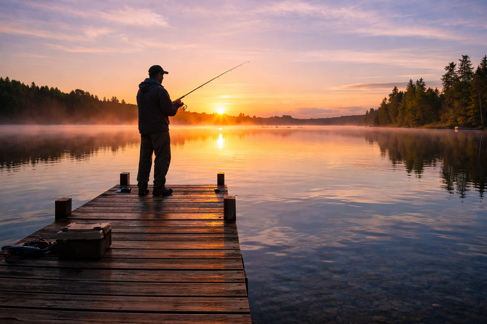
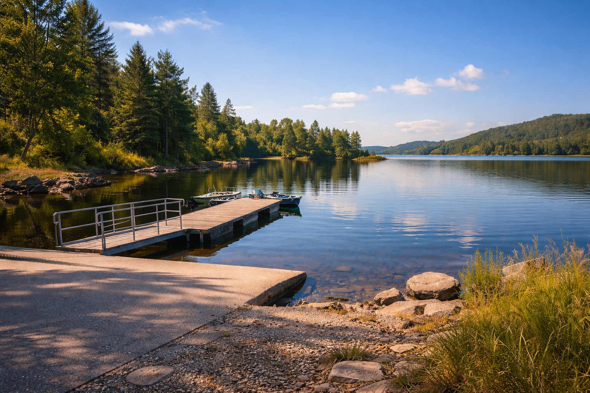
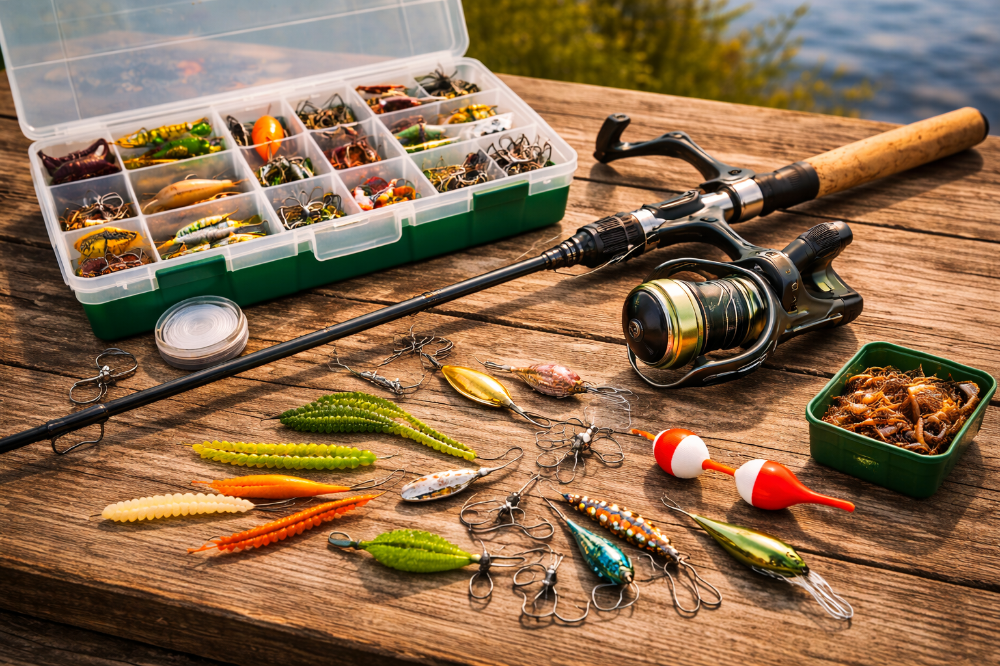
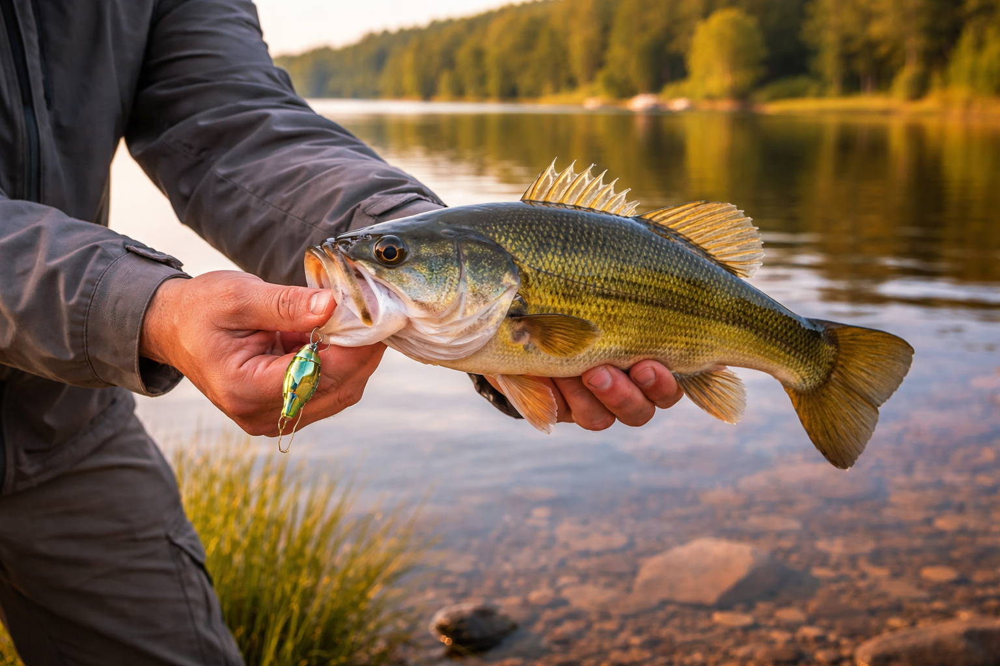
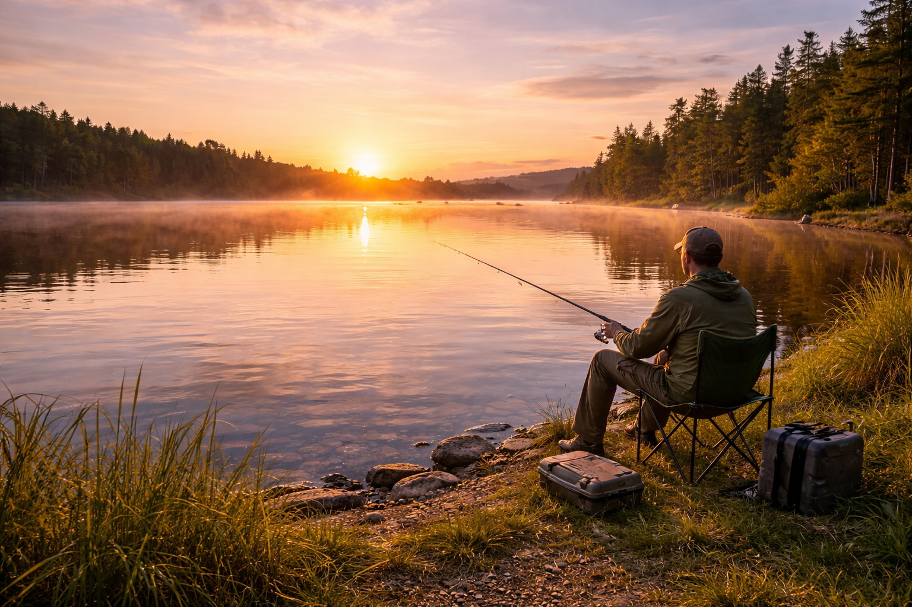
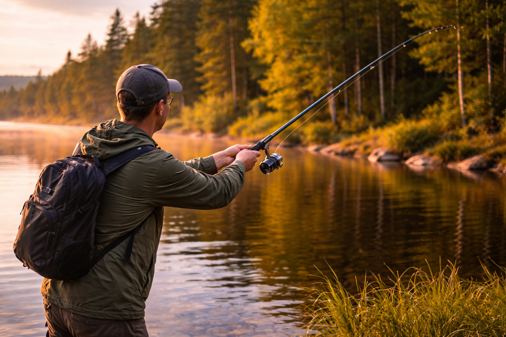

Fishing
Best fishing spots, helpful gear, and tips for a successful day on the water
Fishing is one of the best ways to enjoy the outdoors, relax, and spend time with family or friends. Whether you are fishing from the shore, a dock, or a boat, it is a fun activity for beginners and experienced anglers. This page shares great places to fish, gear to bring, and simple tips to help make your fishing trip more successful.
Popular Fishing Spots
There are many great places to fish, from small local ponds to large lakes and rivers. Lakes are popular for catching bass, bluegill, pike, and perch. Rivers and streams can also be great spots, especially for trout and other freshwater fish. Many public parks, boat launches, and recreation areas offer easy access to fishing locations. Before going, it is always a good idea to check local fishing regulations and make sure you have the correct fishing license if one is required.
Some of the best places to fish usually have:
- Calm water or areas with cover like weeds, docks, or fallen trees
- Public access points or fishing piers
- Areas known for healthy fish populations
- Early morning or evening activity when fish are more active

Fishing Gear to Bring
Having the right gear can make fishing easier and more enjoyable. Beginners do not need a lot of expensive equipment to get started. A simple rod and reel, bait, and a small tackle box can be enough for a good day of fishing.
Helpful fishing gear includes:
- Fishing rod and reel
- Hooks, sinkers, and bobbers
- Live bait or artificial lures
- Tackle box
- Fishing line
- Needle nose pliers
- Net
- Bucket or cooler
- Sunscreen
- Hat and sunglasses
- Water and snacks
If you plan to keep fish, you may also want to bring a cooler with ice. If you are catch-and-release fishing, handle fish carefully and return them to the water as quickly as possible.

Fishing Tips
A few simple tips can make a big difference when fishing. Try going early in the morning or later in the evening, since fish are often more active during those times. Look for shaded areas, weeds, rocks, and docks where fish may be hiding. Be patient and willing to change bait or move to another location if you are not getting bites.
Helpful fishing tips:
- Be quiet near the water so you do not scare fish away
- Watch the weather before leaving
- Use bait that matches the type of fish you want to catch
- Keep your fishing gear organized
- Learn the size and bag limits for your area
- Stay patient and enjoy the experience
Fishing is not only about catching fish. It is also about being outside, enjoying nature, and making good memories.

Why People Love Fishing
Fishing gives people a chance to slow down and enjoy the outdoors. It can be peaceful and relaxing, but it can also be exciting when you finally get a bite. Many people enjoy fishing because it brings together patience, skill, and time in nature. Whether you catch a lot of fish or just enjoy being by the water, fishing is a great outdoor activity for all ages.

